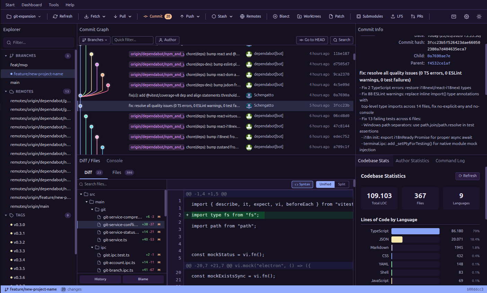
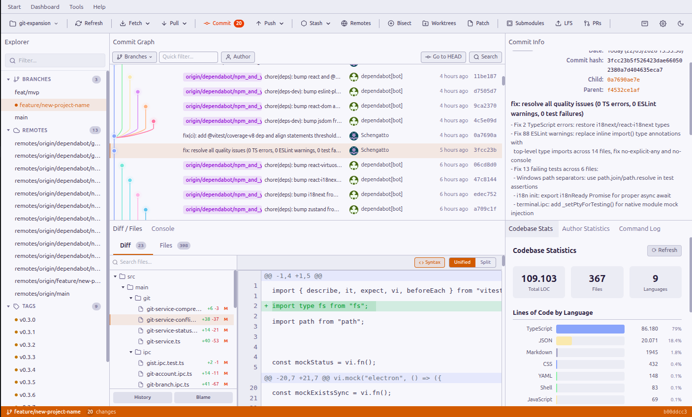

GitSmith is a free, cross-platform Git client that helps you visualize, manage, and master your repositories with ease.


Powerful Git features with a clean, intuitive interface
Navigate your entire history with a beautiful, interactive commit graph. Branches, merges, and tags at a glance.
Review changes with syntax-highlighted, side-by-side or unified diffs. Stage individual hunks with precision.
Reorder, squash, edit, and drop commits with an intuitive drag-and-drop interactive rebase interface.
Create, checkout, merge, rename, and delete branches effortlessly. Full support for remote tracking branches.
Save, browse, apply, and pop your stashes. Never lose work-in-progress changes again.
Resolve conflicts with a built-in merge editor. Visual indicators show conflicting sections clearly.
Manage large files seamlessly with built-in Git LFS support. Track, fetch, and prune LFS objects.
Access any action instantly with the command palette. Fully customizable keyboard shortcuts for power users.
Generate meaningful commit messages with AI assistance. Review and edit before committing.
Use GitSmith in your preferred language. Built-in i18n support with community translations.
Work on multiple branches simultaneously with Git worktrees. Create, switch, and remove worktrees from the UI.
Drop into a full terminal without leaving GitSmith. Run any command right next to your commit graph.
Free and open source. Available for all major platforms.
All downloads available on GitHub Releases.